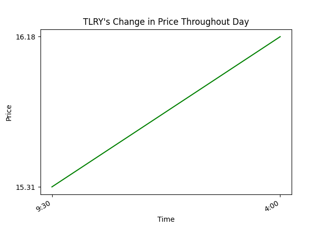
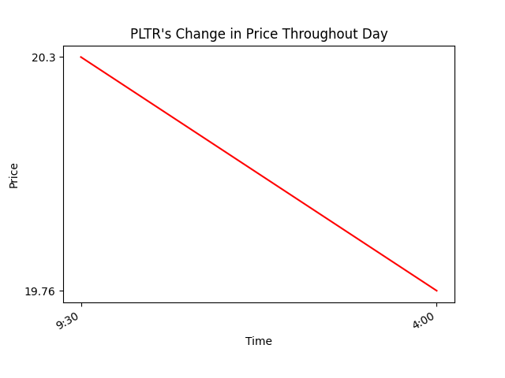
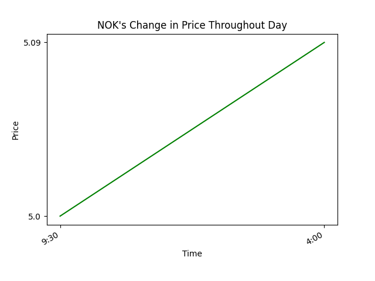
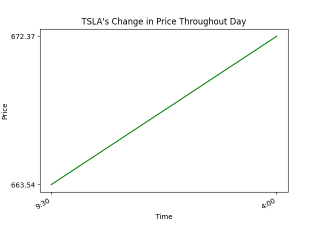
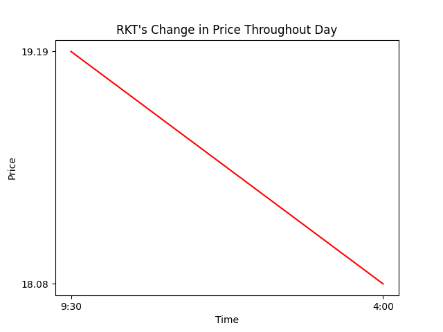
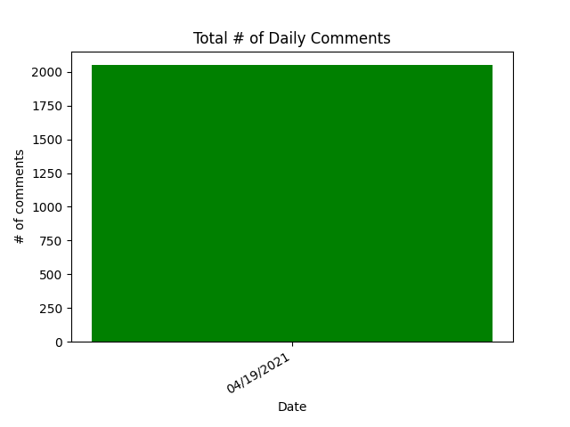
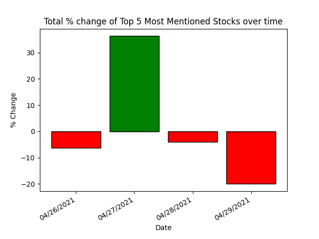
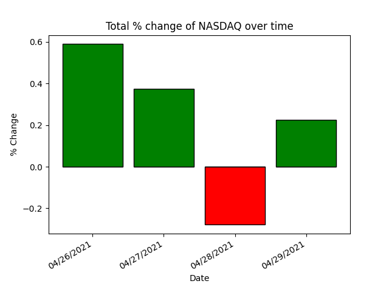

As of 9:15am TLRY had 59 mentions in 1431 comments. At market open TLRY was valued at: $15.31 and at market close TLRY was valued at: $16.18. The total change in price throughout the day was: $0.87 this is a 5.68% change in price throughout the day.
As of 9:15am PLTR had 51 mentions in 1431 comments. At market open PLTR was valued at: $20.3 and at market close PLTR was valued at: $19.76. The total change in price throughout the day was: $-0.54 this is a -2.66% change in price throughout the day.
As of 9:15am NOK had 34 mentions in 1431 comments. At market open NOK was valued at: $5.0 and at market close TLRY was valued at: $5.09. The total change in price throughout the day was: $0.09 this is a 1.8% change in price throughout the day.
As of 9:15am TSLA had 21 mentions in 1431 comments. At market open TSLA was valued at: $663.54 and at market close TSLA was valued at: $672.37. The total change in price throughout the day was: $8.83 this is a 1.33% change in price throughout the day.
As of 9:15am RKT had 21 mentions in 1431 comments. At market open RKT was valued at: $19.19 and at market close RKT was valued at: $18.08. The total change in price throughout the day was: $-1.11 this is a -5.78% change in price throughout the day.
Total number of comments over time:
Net change of daily 5 tickers compared to net change of NASDAQ stock exchange over time:
 